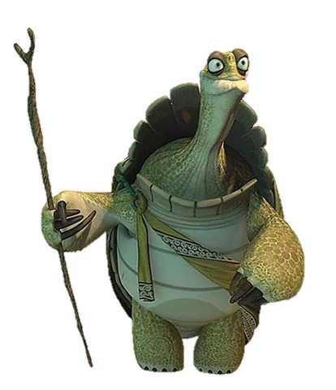
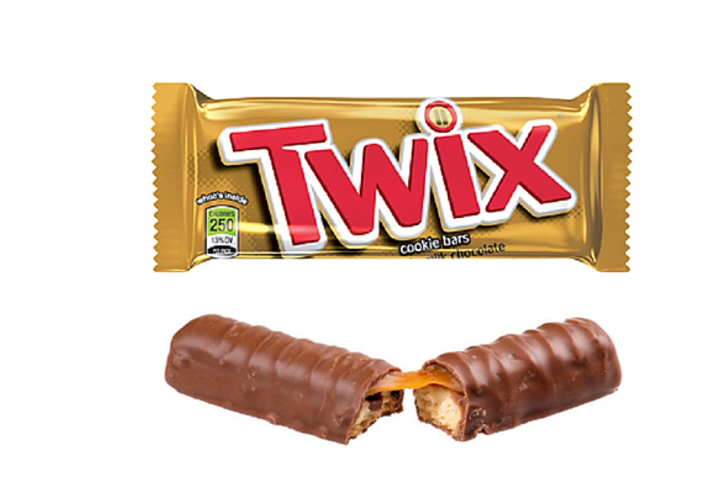
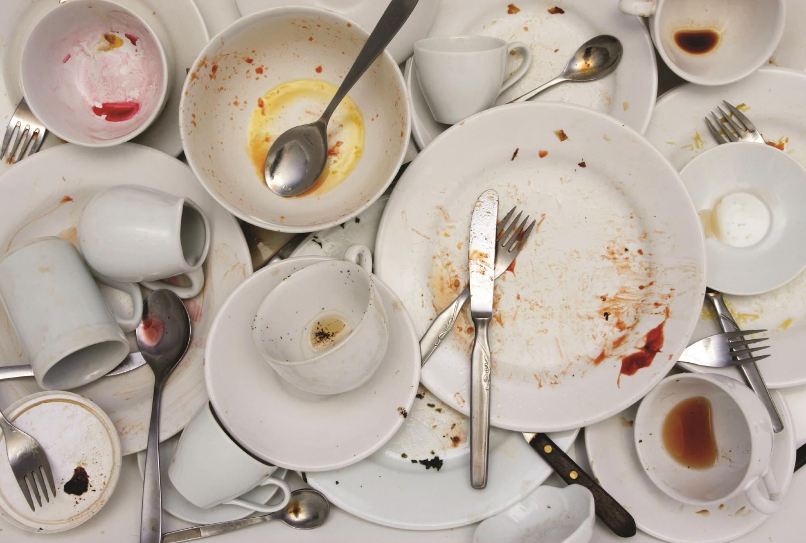
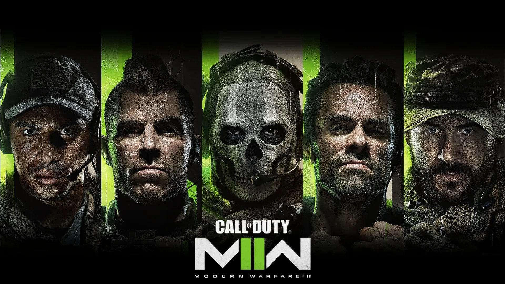
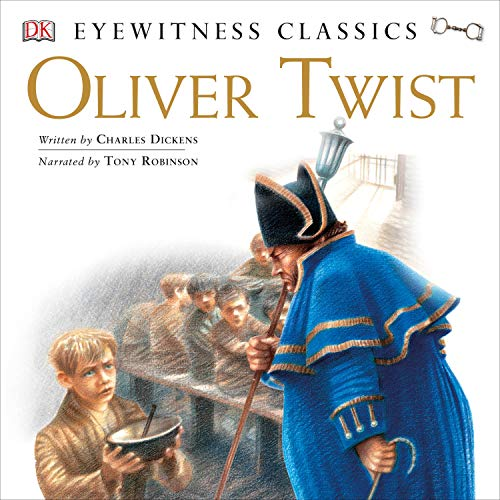

From a young child growing up, I always remembered watching an animated movie called Kung Fu Panda.
In the movie, one of the characters named Grand Master Oogway, who was an old wise turtle, said,
Yesterday is history, tomorrow is a mystery, but today is a gift. That is why it is called the present.
Being young, I thought it was just funny/clever and would always rewind to hear it again. But as I got older,
I started to realize that it actually made sense. What I got from it was Don't worry about the past it already happened, focus on the future,
and you will get through any situation.

Faith is taking the first step even when you can’t see the whole staircase.This is another quote that inspires me.
The great Martin Luther King said it. I so happen to come across this quote while doing historical research on persons who positively impacted black
history. The quote has helped me to try new things and has had a very positive impact on my day-to-day life.
Traits
LIKES
Music I love to listen to music!! One of my favourite artist is Lil Tecca I first discovered him when i was
scrolling through youtube at school in the I.T room and the teacher almost caught me.
Chocolate I think Chocolate is mans most Greatest Invention and Greatest Candy. It has plenty of health benefits and tastes good.
What could replace beat Chocolate? My favourite Chocolate is twix.

Learning about Computers Learning about computers is very exciting for me. I get to see how things work, what part goes with what, and what skills
are required to make a PC. I currently want to build a PC, but due to all the prices of the parts being relatively high and fluctuating, I will have to wait.
DISLIKES
Washing Dishes I HATE WASHING DISHES WITH A PASSION
Maybe Because when washing the dishes the food feels slimy or Maybe because there are a lot
of dishes to be cleaned, I do not know but I HATE WASHING DISHES WITH A PASSION. 
Eggs I have no other explanation for why I'm not too fond of eggs other than they taste bad.
Spiders My fear of spiders started when I was around 4 or 5; when my uncle came to visit, he brought a film called Camel Spiders, which was about very large ENORMOUS
spiders that hunt humans.
EDUCATION HISTORY
Nagoo Head Primary Naggo Head primary is where I started to develop my social skills, learn to be a good judge of character, and find my interest, likes, and dislikes.
Kingston College Fortis Cadere Cedere Non-Potest, The Brave May Fall But Never Yield, So far, My favorite school, that's where I met most of my Loyal friends and where I was shaped into
being the best person I could be. Fortis Forever.
Utech I am currently attending the University of technology Jamaica. I am in my second year where i am current persuing a bachelors of Science in Computing degree Majoring in Information Technology.
My experience so far has been great and we are starting to have our classes face to face again which i am happy about because i get interact with people face to face.
HOBBIES
Playing online Video Games Call of Duty is a popular first-person shooter video game franchise. Players assume the role of soldiers in various military operations and engage in intense combat
with enemy forces.The game was developed by Activision and has over 500,000 players supporting the game in 2023 it is also a great way to meet new people
especially since they are from different parts of the world.

Reading Everyone knows Oliver Twist, a classic tale written by Charles Dickens, published in 1838. The story follows the life of an orphan boy named Oliver Twist, who endures a
harsh upbringing in a workhouse and then escapes to London where he is caught up in the criminal underworld. Through his experiences, Dickens exposes the poverty, crime and social injustice of 19th-century England.

Watching Series/Movies One of my Favourite series is YOU on Netflix. "YOU" is a psychological thriller series on Netflix that is based on the novel of the same name by Caroline Kepnes. The show follows the life
of bookstore manager Joe Goldberg, who becomes obsessed with a customer named Guinevere Beck and will stop at nothing to get closer to her, even if it means resorting to dangerous and obsessive behavior. The series has received positive reviews for its intense and suspenseful
plot, as well as its commentary on the dark side of technology and the perils of toxic relationships..
Personality Test
When researching about the Keirsey personality test, credible sources show its validated through extensive research and how it has a high level of reliability and consistency. It is also based on psychologist David Keirsey's expansion of Carl Jung's
theories on personality types. I think the result I recieved was valid it is based on observable behaviors and tendencies rather than self-assessment, making it a more accurate in measuring my personality type.